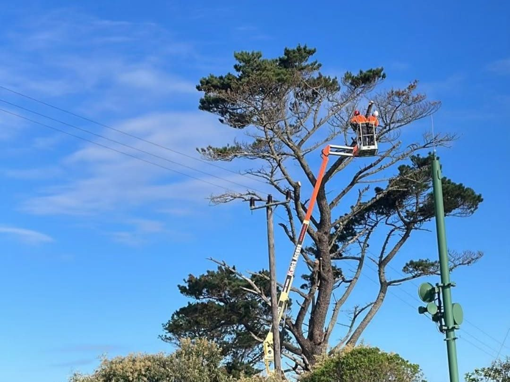

01 — Felling
Large Tree Felling
If there is space to drop the tree in one piece, that is the quick way and we will price it that way. Most Garden Route properties do not have that space, so the tree comes down in sections: the climber works from the top, cuts are lowered on ropes, and the trunk is blocked down last.
- Gums, pines, poplars and mature garden trees
- Sectional dismantling next to houses, walls and pools
- Trees close to powerlines and outbuildings
- Trunk cut to firewood lengths or removed whole